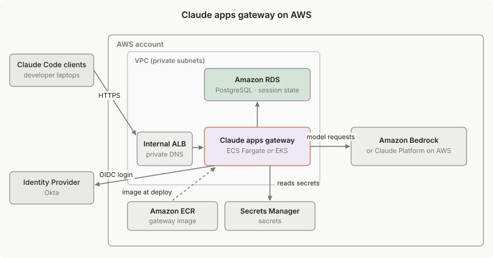

在 AWS 上部署 Claude apps gateway
在 AWS 上运行 Claude apps gateway 的完整示例：ECS Fargate 或 EKS、Amazon RDS for PostgreSQL、AWS Secrets Manager 和 IAM 角色身份验证到 Amazon Bedrock。
本页介绍了在 AWS 上运行 Claude apps gateway 的一种方式。该配置是客户管理基础设施的工作示例，而不是受支持的生产部署；在将其调整到您自己的环境之前，使用它来了解各个部分如何组合在一起。有关平台无关的要求，请参阅部署指南。
此示例在 AWS 上配置 Claude apps gateway，使用 Amazon Bedrock 作为模型上游，计算资源使用 Amazon ECS 在 AWS Fargate 上或 Amazon EKS。Okta 是示例身份提供商 (IdP)，但任何符合 OpenID Connect (OIDC) 的 IdP 都可以工作；有关每个 IdP 的详细信息，请参阅身份提供商设置。
Bedrock 不是 AWS 上唯一的 Claude 上游。gateway 还支持 Claude Platform on AWS，这是由 Anthropic 运营的 Claude API，具有 AWS 身份验证和 AWS Marketplace 计费，可以代替 Bedrock 或与其一起使用。其上游条目、凭证和 IAM 权限与本页的 Bedrock 范围的权限不同；Claude Platform on AWS 上游参考涵盖了哪些内容会改变，本页的其余部分保持不变。
架构

示例架构，以 Amazon Bedrock 作为模型上游。Claude Platform on AWS 上游占据相同的位置。
gateway 在您的网络上作为私有 HTTPS 端点运行，开发人员通过您的 IdP 登录。他们的 Claude Code 会话通过 gateway 的 IAM 角色到达 Amazon Bedrock 上的 Claude 模型，因此没有模型凭证落在开发人员机器上。参考配置配置：
- Amazon ECS on AWS Fargate 服务或 Amazon EKS Deployment 运行 gateway 容器
- Amazon ECR 存储库用于 gateway 镜像
- Amazon RDS for PostgreSQL 实例在私有子网中，不可公开访问，用于 gateway 的存储
- AWS Secrets Manager 机密用于 JWT 签名密钥、OIDC 客户端机密和 Postgres URL
- IAM 角色具有
bedrock:InvokeModel、bedrock:InvokeModelWithResponseStream和bedrock:CountTokens，作为 ECS 任务角色附加或通过 EKS 上的 IAM Roles for Service Accounts (IRSA) 绑定 - 内部应用负载均衡器用于 HTTPS
前置条件
该演练创建 gateway 自己的资源，但它建立在您已有的网络和身份基础设施之上。在开始之前，您需要：
- 一个 AWS 账户，具有创建上述资源的权限
- 安装了 AWS CLI v2 并已认证，以及本地安装了 Docker
- 一个 VPC，至少有两个私有子网在不同的可用区中，通过 NAT 网关具有出站互联网访问；内部负载均衡器需要两个 AZ 中的子网，gateway 需要到 Bedrock 和您的 IdP 的出站访问
- 一个 Okta OIDC web 应用程序，重定向 URI 为
https://<gateway-host>/oauth/callback；请参阅身份提供商设置 - gateway 的 TLS 主机名，通常是 Route 53 私有托管区域中的内部 DNS 名称，指向负载均衡器，具有该名称的 ACM 证书，由 AWS Private CA 导入或颁发
设置您的环境变量
本页上的每个命令都从您的 shell 读取四个值：AWS_REGION、ACCOUNT_ID、VPC_ID 和 PRIVATE_SUBNETS。
选择一个 Bedrock 提供您需要的 Claude 模型的美国区域。该演练依赖于 gateway 的内置模型目录，该目录解析为 us.anthropic.* 推理配置文件，IAM 策略授予这些 ARN。在非美国区域中，添加一个models: 块，其中包含该地理位置的推理配置文件 ID，并更改 IAM 策略的 ARN 前缀以匹配。
如果您手边没有 VPC ID，请使用 aws ec2 describe-vpcs 列出您的 VPC，然后列出该 VPC 的子网以找到两个不同可用区中的私有子网：
aws ec2 describe-subnets --filters "Name=vpc-id,Values=<your-vpc-id>" \
--query 'Subnets[].{ID:SubnetId,AZ:AvailabilityZone,CIDR:CidrBlock}' --output table
在继续之前导出所有四个：
export AWS_REGION=us-east-1 # 一个 Bedrock 提供您需要的 Claude 模型的美国区域
export ACCOUNT_ID="$(aws sts get-caller-identity --query Account --output text)"
export VPC_ID=<your-vpc-id>
export PRIVATE_SUBNETS="<subnet-id-a> <subnet-id-b>"
部署 gateway
下面的步骤使用 aws 命令配置完整的部署。
1. 创建安全组
三个安全组链接流量路径：您的企业网络在 443 上到达负载均衡器，负载均衡器在 8080 上到达 gateway，gateway 在 5432 上到达 Postgres。其他任何东西都无法到达。如何附加它们取决于计算轨道：
- 在 ECS Fargate 上，部署步骤将
$ALB_SG附加到负载均衡器，将$GW_SG附加到服务。 - 在 EKS 上，AWS Load Balancer Controller 为 ALB 创建自己的前端安全组，因此
$ALB_SG和$GW_SG未使用：部署步骤的inbound-cidrs注解将侦听器限制为您的企业网络，数据库安全组允许集群的安全组而不是$GW_SG。
ALB_SG="$(aws ec2 create-security-group --group-name claude-gateway-alb \
--description "Claude gateway ALB" --vpc-id "$VPC_ID" \
--query GroupId --output text)"
GW_SG="$(aws ec2 create-security-group --group-name claude-gateway-svc \
--description "Claude gateway service" --vpc-id "$VPC_ID" \
--query GroupId --output text)"
DB_SG="$(aws ec2 create-security-group --group-name claude-gateway-db \
--description "Claude gateway Postgres" --vpc-id "$VPC_ID" \
--query GroupId --output text)"
aws ec2 authorize-security-group-ingress --group-id "$ALB_SG" \
--protocol tcp --port 443 --cidr <your-corporate-cidr>
aws ec2 authorize-security-group-ingress --group-id "$GW_SG" \
--protocol tcp --port 8080 --source-group "$ALB_SG"
aws ec2 authorize-security-group-ingress --group-id "$DB_SG" \
--protocol tcp --port 5432 --source-group "$GW_SG"
2. 创建 IAM 角色并提交用例表单
gateway 使用专用任务角色运行，其唯一权限是在 Bedrock 上调用 Claude 模型。根据 Bedrock 上游参考，该策略必须涵盖跨区域推理配置文件 ARN 和底层基础模型 ARN：
cat > bedrock-invoke.json <<EOF
{
"Version": "2012-10-17",
"Statement": [{
"Effect": "Allow",
"Action": ["bedrock:InvokeModel", "bedrock:InvokeModelWithResponseStream", "bedrock:CountTokens"],
"Resource": [
"arn:aws:bedrock:${AWS_REGION}:${ACCOUNT_ID}:inference-profile/us.anthropic.*",
"arn:aws:bedrock:*::foundation-model/anthropic.*"
]
}]
}
EOF
cat > ecs-trust.json <<'EOF'
{
"Version": "2012-10-17",
"Statement": [{
"Effect": "Allow",
"Principal": { "Service": "ecs-tasks.amazonaws.com" },
"Action": "sts:AssumeRole"
}]
}
EOF
aws iam create-role --role-name claude-gateway-task \
--assume-role-policy-document file://ecs-trust.json
aws iam put-role-policy --role-name claude-gateway-task \
--policy-name bedrock-invoke --policy-document file://bedrock-invoke.json
ECS 还需要一个执行角色，ECS Agent 本身使用它从 ECR 拉取镜像并注入稍后创建的 Secrets Manager 值。它与 gateway 的 AWS SDK 在运行时使用的任务角色分开：
aws iam create-role --role-name claude-gateway-execution \
--assume-role-policy-document file://ecs-trust.json
aws iam attach-role-policy --role-name claude-gateway-execution \
--policy-arn arn:aws:iam::aws:policy/service-role/AmazonECSTaskExecutionRolePolicy
cat > secrets-read.json <<EOF
{
"Version": "2012-10-17",
"Statement": [{
"Effect": "Allow",
"Action": ["secretsmanager:GetSecretValue", "secretsmanager:DescribeSecret"],
"Resource": [
"arn:aws:secretsmanager:${AWS_REGION}:${ACCOUNT_ID}:secret:gateway-jwt-secret-??????",
"arn:aws:secretsmanager:${AWS_REGION}:${ACCOUNT_ID}:secret:gateway-oidc-client-secret-??????",
"arn:aws:secretsmanager:${AWS_REGION}:${ACCOUNT_ID}:secret:gateway-postgres-url-??????"
]
}]
}
EOF
aws iam put-role-policy --role-name claude-gateway-execution \
--policy-name read-gateway-secrets --policy-document file://secrets-read.json
该策略为每个机密命名一个 ARN，而不是裸 gateway-* 通配符，在共享账户中，这也会匹配不相关的机密；尾部的 -?????? 完全匹配 Secrets Manager 附加到每个机密 ARN 的随机六字符后缀。尾部的 -* 将是一个普通前缀 glob，也会匹配更长的名称，例如 gateway-postgres-url-prod。
IAM 策略授予 gateway 调用 Bedrock 的权限，Bedrock 在商业区域中默认启用模型访问。剩余的账户级门槛是 Anthropic 的一次性用例表单：如果您账户中没有人提交过，请打开 Amazon Bedrock 控制台，从模型目录中选择一个 Anthropic 模型，并完成表单。提交后立即授予访问权限；有关 AWS Organizations 表单和提交者需要的 IAM 权限，请参阅 Claude Code on Amazon Bedrock。
EKS 轨道改为在 IRSA 角色上重用两个策略文档，而不是两个 ECS 角色；请参阅部署步骤。
3. 配置 Amazon RDS for PostgreSQL
该实例在私有子网中运行 Postgres 16，没有公共地址，存储加密打开。
首先，创建将数据库放在私有子网中的子网组，以及具有 rds.force_ssl=1 的参数组，以便服务器拒绝明文连接。引擎版本固定一次，因为参数组的系列必须与实例运行的引擎主版本匹配：
aws rds create-db-subnet-group --db-subnet-group-name claude-gateway-db \
--db-subnet-group-description "Claude gateway" --subnet-ids $PRIVATE_SUBNETS
PG_VERSION=16
PG_FAMILY="postgres${PG_VERSION}"
aws rds create-db-parameter-group --db-parameter-group-name claude-gateway-db \
--db-parameter-group-family "$PG_FAMILY" \
--description "Claude gateway - require TLS on every connection"
aws rds modify-db-parameter-group --db-parameter-group-name claude-gateway-db \
--parameters "ParameterName=rds.force_ssl,ParameterValue=1,ApplyMethod=immediate"
然后使用生成的主密码创建实例：
PGPASS="$(openssl rand -hex 24)"
aws rds create-db-instance --db-instance-identifier claude-gateway-db \
--engine postgres --engine-version "$PG_VERSION" \
--db-instance-class db.t4g.micro \
--allocated-storage 20 --db-name claude_gateway \
--master-username gateway --master-user-password "$PGPASS" \
--db-subnet-group-name claude-gateway-db \
--db-parameter-group-name claude-gateway-db \
--vpc-security-group-ids "$DB_SG" \
--no-publicly-accessible --storage-encrypted
字面 --master-user-password 参数在命令运行时在进程表和审计/EDR 日志中可见，与机密步骤的注释涵盖的相同暴露。在共享或受监控的主机上，改为从 0600 文件通过 --cli-input-json 传递密码，就像 bundle 的 setup.sh 所做的那样。
等待实例启动，这可能需要几分钟，然后读取其私有端点并组装 gateway 将使用的连接字符串：
aws rds wait db-instance-available --db-instance-identifier claude-gateway-db
DB_HOST="$(aws rds describe-db-instances --db-instance-identifier claude-gateway-db \
--query 'DBInstances[0].Endpoint.Address' --output text)"
GATEWAY_POSTGRES_URL="postgres://gateway:${PGPASS}@${DB_HOST}:5432/claude_gateway?sslmode=verify-full"
sslmode=verify-full 使 gateway 验证 RDS 服务器证书的链和主机名，不仅仅是加密。信任锚是 AWS RDS 证书包，镜像构建步骤下面将其复制到 /etc/claude/rds-global-bundle.pem 并通过 NODE_EXTRA_CA_CERTS 信任。不要将 libpq 风格的 sslrootcert= 参数附加到 URL：gateway 的驱动程序仅从查询字符串读取 sslmode，并会将 sslrootcert 转发给 Postgres 作为启动参数，服务器会拒绝。
ECS 服务或 EKS pod 必须在此 VPC 中运行，以便它们可以到达实例的私有端点，claude-gateway-db 安全组仅允许 gateway 的安全组。
4. 编写 gateway.yaml
upstreams 块使用 auth: {} 指向 Bedrock，因此 gateway 通过 ECS 上的任务角色或 EKS 上的 IRSA 角色从 AWS 默认凭据链进行身份验证。有关每个字段，请参阅配置参考。
两个 listen 字段描述什么位于 gateway 前面：
public_url：外部https://源，对于任何非环回绑定都是必需的；请参阅listen参考。gateway 仅从此值构建 IdPredirect_uri和其发现文档，从不从X-Forwarded-*标头构建。trusted_proxies：前端的源范围。gateway 仅当 TCP 对等体在此列表中时才遵守X-Forwarded-For，然后遍历链越过受信任的跳跃，因此每 IP 登录速率限制和审计事件记录开发人员 IP 而不是负载均衡器的。
在两个轨道上，前端是内部 ALB，无论是直接创建还是由 AWS Load Balancer Controller 创建，ALB 的节点从它附加到的子网中获取地址，因此将 trusted_proxies 设置为这些子网的 CIDR。这将这些子网中的每个主机信任为代理。保持 ALB 的入站源（您的企业 CIDR）不与它们重叠，并且不要与可能通过 X-Forwarded-For 欺骗客户端 IP 的不受信任的工作负载共享子网。
ALB 的客户端端口保留属性 routing.http.xff_client_port.enabled 可以保持任一设置：启用时，ALB 将客户端写为 203.0.113.7:54321 或 [2001:db8::1]:54321，gateway 读取两者并删除端口。
listen:
host: 0.0.0.0
port: 8080
public_url: https://claude-gateway.internal.example.com
trusted_proxies: [<your-alb-subnet-cidrs>]
oidc:
issuer: https://example.okta.com
client_id: 0oa1example2
client_secret: ${OIDC_CLIENT_SECRET} # EKS: ${file:/secrets/oidc-client-secret}
allowed_email_domains: [example.com]
# Okta org 授权服务器返回一个省略了
# 电子邮件和组的瘦 id_token；gateway 从 /userinfo 填充它们。
userinfo_fallback: true
# Okta 仅在请求 `groups` 范围且
# 应用的组声明过滤器允许它们时才发出组。
scopes: [openid, profile, email, offline_access, groups]
session:
jwt_secret: ${GATEWAY_JWT_SECRET} # EKS: ${file:/secrets/jwt-secret}
ttl_hours: 8 # 限制取消配置延迟；降低
# 朝向 1 以获得更紧密的撤销
store:
postgres_url: ${GATEWAY_POSTGRES_URL} # EKS: ${file:/secrets/postgres-url}
# readiness_grace_seconds: 300 # 在 RDS 故障转移期间
# 保持通过健康检查
upstreams:
- provider: bedrock
region: <your-region> # 匹配 $AWS_REGION 以便 IAM
# 策略的 ARN 涵盖它
auth: {} # AWS 默认凭据链：
# ECS 任务角色，或 EKS 上的 IRSA
只有 oidc 块是 Okta 特定的。要改为使用 Microsoft Entra ID，请将 issuer 设置为 https://login.microsoftonline.com/<tenant-id>/v2.0，删除 userinfo_fallback 和 groups 范围，并注意 Entra 发出组对象 ID 而不是名称，因此 managed.policies 必须匹配 GUID，或使用 oidc.groups_claim: roles 的应用角色。请参阅身份提供商设置。
5. 在 AWS Secrets Manager 中存储机密
创建三个机密；IAM 步骤中的执行角色已经可以读取它们：
aws secretsmanager create-secret --name gateway-jwt-secret \
--secret-string "$(openssl rand -base64 32)"
aws secretsmanager create-secret --name gateway-oidc-client-secret \
--secret-string '<your-okta-client-secret>'
aws secretsmanager create-secret --name gateway-postgres-url \
--secret-string "$GATEWAY_POSTGRES_URL"
注意每个调用打印的 ARN；ECS 任务定义通过 ARN 引用机密。
字面 --secret-string 参数在每个命令运行时在进程表和审计/EDR 日志中可见。在共享或受监控的主机上，将值放在 0600 文件中，改为传递 --secret-string file://<path>。bundle 的 setup.sh 以相同的方式将机密值保持在进程 argv 之外，将 0600 临时文件传递给 --cli-input-json。
与机密不同，gateway.yaml 本身不包含机密值，因为每个凭据在启动时通过 ${VAR} 或 ${file:...} 扩展解析。一切如何到达容器因轨道而异：
- 在 ECS 上，下一步的构建将
gateway.yaml复制到镜像中的/etc/claude/gateway.yaml，任务定义通过其secrets字段将三个机密作为环境变量注入，因此 YAML 引用${GATEWAY_JWT_SECRET}、${OIDC_CLIENT_SECRET}和${GATEWAY_POSTGRES_URL}。 - 在 EKS 上，从 ConfigMap 挂载
gateway.yaml并将机密作为文件挂载在/secrets，引用为${file:/secrets/...}。使用 External Secrets Operator 或 Secrets Store CSI 驱动程序的 AWS 提供程序从 Secrets Manager 获取 Kubernetes Secrets，或使用kubectl直接创建它们。
6. 构建镜像并将其推送到 Amazon ECR
根据容器镜像要求构建镜像，将 linux-x64 glibc 二进制文件放在构建上下文中的 ./claude。根据这些要求编写您自己的 Dockerfile，或从 bundle 的 Dockerfile 开始，它将填充的 gateway.yaml 从前面的步骤复制到镜像中的 /etc/claude/gateway.yaml。在 ECS 上，该嵌入式副本是配置到达容器的方式，这就是为什么构建在文件被写入后进行。EKS 轨道改为在部署时从 ConfigMap 挂载 gateway.yaml，因此嵌入式副本在那里未使用。
镜像还携带 AWS RDS 证书包作为连接字符串的 sslmode=verify-full 的信任锚，因此首先将其下载到构建上下文中。AWS 轮换 bundle（新的区域 CA 被附加），因此每次构建时下载它，而不是固定校验和或提交它：
curl -fL --proto '=https' -o rds-global-bundle.pem \
https://truststore.pki.rds.amazonaws.com/global/global-bundle.pem
容器镜像要求不涵盖 bundle，因此如果您编写自己的 Dockerfile，添加复制和信任它的两行；bundle 的 Dockerfile 已经包含两者：
COPY rds-global-bundle.pem /etc/claude/rds-global-bundle.pem
ENV NODE_EXTRA_CA_CERTS=/etc/claude/rds-global-bundle.pem
创建 ECR 仓库并将 Docker 登录到它。不可变标签意味着部署步骤固定的 <version> 标签以后不能被无声地重新指向不同的镜像：
aws ecr create-repository --repository-name claude-gateway \
--image-tag-mutability IMMUTABLE \
--image-scanning-configuration scanOnPush=true
aws ecr get-login-password --region "$AWS_REGION" \
| docker login --username AWS --password-stdin \
"${ACCOUNT_ID}.dkr.ecr.${AWS_REGION}.amazonaws.com"
构建并推送镜像。下面的任务定义运行 linux/amd64，因此平台必须在这里匹配；对于 Fargate on ARM64 (Graviton)，使用 linux-arm64 二进制文件构建 linux/arm64 并改为将 cpuArchitecture 设置为 ARM64：
docker build --platform=linux/amd64 \
-t "${ACCOUNT_ID}.dkr.ecr.${AWS_REGION}.amazonaws.com/claude-gateway:<version>" .
docker push "${ACCOUNT_ID}.dkr.ecr.${AWS_REGION}.amazonaws.com/claude-gateway:<version>"
7. 部署
[tab] ECS Fargate
创建集群和 gateway 的日志组，用于其 stderr，其中包含其审计事件和操作日志。保留期需要通过单独的调用来设置；如果不设置，CloudWatch 会永远保留日志；将 90 天与您的审计保留策略对齐：
bash theme={null} aws ecs create-cluster --cluster-name claude-gateway aws logs create-log-group --log-group-name /ecs/claude-gateway aws logs put-retention-policy --log-group-name /ecs/claude-gateway \ --retention-in-days 90编写任务定义。任务角色携带 Bedrock 权限，执行角色注入机密；使用 Secrets Manager 步骤中的机密 ARN：
json claude-gateway-task.json theme={null} { "family": "claude-gateway", "networkMode": "awsvpc", "requiresCompatibilities": ["FARGATE"], "cpu": "1024", "memory": "2048", "runtimePlatform": { "cpuArchitecture": "X86_64", "operatingSystemFamily": "LINUX" }, "executionRoleArn": "arn:aws:iam::<account-id>:role/claude-gateway-execution", "taskRoleArn": "arn:aws:iam::<account-id>:role/claude-gateway-task", "containerDefinitions": [ { "name": "gateway", "image": "<account-id>.dkr.ecr.<region>.amazonaws.com/claude-gateway:<version>", "portMappings": [{ "containerPort": 8080 }], "secrets": [ { "name": "GATEWAY_JWT_SECRET", "valueFrom": "<gateway-jwt-secret ARN>" }, { "name": "OIDC_CLIENT_SECRET", "valueFrom": "<gateway-oidc-client-secret ARN>" }, { "name": "GATEWAY_POSTGRES_URL", "valueFrom": "<gateway-postgres-url ARN>" } ], "logConfiguration": { "logDriver": "awslogs", "options": { "awslogs-group": "/ecs/claude-gateway", "awslogs-region": "<region>", "awslogs-stream-prefix": "gateway" } } } ] }注册它：
bash theme={null} aws ecs register-task-definition --cli-input-json file://claude-gateway-task.json在前面放一个内部 ALB，带有一个对 gateway 进行健康检查的目标组。
--ip-address-type ipv4很重要：内部双栈 ALB 发布公共范围 AAAA 记录，/login私有网络检查拒绝：```bash theme={null}
ALB_ARN="$(aws elbv2 create-load-balancer --name claude-gateway \
--scheme internal --type application --ip-address-type ipv4 \
--subnets $PRIVATE_SUBNETS --security-groups "$ALB_SG" \
--query 'LoadBalancers[0].LoadBalancerArn' --output text)"TG_ARN="$(aws elbv2 create-target-group --name claude-gateway \
--protocol HTTP --port 8080 --vpc-id "$VPC_ID" --target-type ip \
--health-check-path /readyz \
--query 'TargetGroups[0].TargetGroupArn' --output text)"
```添加 HTTPS 侦听器。
--ssl-policy固定现代 TLS 下限，因为省略它会回退到遗留ELBSecurityPolicy-2016-08默认值，仍然接受 TLS 1.0/1.1。ALB 在默认情况下 60 秒无数据后关闭连接。gateway 的保活 ping 保持流在该默认值内，因此提高超时在 ping 节奏上方增加余量；故障排除行关于丢弃的流涵盖了机制和较旧的 gateway。下面的命令添加侦听器并提高超时：
```bash theme={null}
aws elbv2 create-listener --load-balancer-arn "$ALB_ARN" \
--protocol HTTPS --port 443 \
--ssl-policy ELBSecurityPolicy-TLS13-1-2-2021-06 \
--certificates CertificateArn=\
--default-actions Type=forward,TargetGroupArn="$TG_ARN"aws elbv2 modify-load-balancer-attributes --load-balancer-arn "$ALB_ARN" \
--attributes Key=idle_timeout.timeout_seconds,Value=3600
```创建服务。部署断路器将其任务持续失败的部署（来自坏镜像或无法启动的配置）回滚到最后的稳定状态，而不是永远重新启动失败的任务：
bash theme={null} aws ecs create-service --cluster claude-gateway --service-name claude-gateway \ --task-definition claude-gateway --desired-count 1 --launch-type FARGATE \ --deployment-configuration "deploymentCircuitBreaker={enable=true,rollback=true}" \ --health-check-grace-period-seconds 60 \ --network-configuration "awsvpcConfiguration={subnets=[$(echo $PRIVATE_SUBNETS | tr ' ' ',')],securityGroups=[$GW_SG],assignPublicIp=DISABLED}" \ --load-balancers "targetGroupArn=$TG_ARN,containerName=gateway,containerPort=8080"60 秒的宽限期给冷任务时间拉取镜像、连接到存储并在 ECS 开始计算针对部署的失败之前回答其第一个健康检查。
目标组对
GET /readyz的健康检查验证存储是否可达，因此无法到达 Postgres 的任务永远不会进入轮换。要通过短数据库中断（例如 RDS 故障转移）保持任务通过检查，请按照中断行为中所述设置store.readiness_grace_seconds，其中也涵盖了/healthz替代方案。任务在私有子网中运行，没有公共 IP，因此所有出站（到 Bedrock、您的 IdP、Secrets Manager、ECR 和 CloudWatch Logs）都通过 NAT 网关。要将 Bedrock 流量保持在公共路径之外，创建一个
bedrock-runtime接口 VPC 端点并将上游的base_url指向它，如 Bedrock 上游参考所示；IdP 仍然需要互联网出站。最后，为开发人员提供一个可私有解析的主机名：在 Route 53 私有托管区域中，将 gateway 的内部 DNS 名称别名到 ALB，并将
listen.public_url设置为该主机名。ALB 自己的*.elb.amazonaws.com名称在内部 ALB 上解析为私有地址，但它不能携带您的 ACM 证书，因此使用您自己的名称。在第一次登录之前，将 OAuth 客户端的授权重定向 URI 更新为
<public_url>/oauth/callback。更改public_url后，在新标签下重建并推送镜像，注册新的任务定义修订版本，然后重新部署。在 ECS 上，该设置位于镜像的嵌入式gateway.yaml中，gateway 仅从该设置构建其公共源，忽略X-Forwarded-Host和X-Forwarded-Proto。X-Forwarded-For仅在设置listen.trusted_proxies时才被遵守用于客户端 IP。[tab] EKS
此轨道需要本地安装
kubectl和eksctl，以及具有 IAM OIDC 提供程序和已安装 AWS Load Balancer Controller 的现有 EKS 集群。集群必须在$VPC_ID上，以便 pod 可以到达 RDS 私有端点，claude-gateway-db安全组必须允许集群的 pod 或节点安全组而不是$GW_SG。在 EKS 上，gateway 通过 IRSA 而不是 ECS 角色获得其 Bedrock 凭据。IAM 步骤中的
ecs-tasks.amazonaws.com信任策略在这里不适用；IRSA 需要一个信任策略在集群的 OIDC 提供程序上联合的角色，范围为system:serviceaccount:claude-gateway:gateway。eksctl create iamserviceaccount在一个步骤中创建该角色、附加策略并使用角色 ARN 注解 Kubernetes 服务账户。将 IAM 步骤中的两个策略文档转换为它可以附加的托管策略：```bash theme={null}
BEDROCK_POLICY_ARN="$(aws iam create-policy --policy-name claude-gateway-bedrock-invoke \
--policy-document file://bedrock-invoke.json --query Policy.Arn --output text)"
SECRETS_POLICY_ARN="$(aws iam create-policy --policy-name claude-gateway-secrets-read \
--policy-document file://secrets-read.json --query Policy.Arn --output text)"kubectl create namespace claude-gateway
eksctl create iamserviceaccount --cluster--region "$AWS_REGION" \
--namespace claude-gateway --name gateway --role-name claude-gateway \
--attach-policy-arn "$BEDROCK_POLICY_ARN" \
--attach-policy-arn "$SECRETS_POLICY_ARN" \
--approve
```机密策略仅在 pod 自己读取 Secrets Manager 时需要，如 Secrets Store CSI 驱动程序的 AWS 提供程序使用挂载 pod 的服务账户所做的那样；如果您以其他方式创建 Kubernetes Secrets，则删除它。提供程序需要策略的两个操作：它在协调轮换的机密时调用
DescribeSecret，因此仅GetSecretValue授予在第一次部署时挂载但停止拾取轮换。将 gateway 部署为标准 Deployment 加上 Service 和 Ingress，如Kubernetes 部署中所述，具有：
serviceAccountName: gateway- 从 ConfigMap 挂载的
gateway.yaml和在/secrets挂载的机密- 就绪探针指向
GET /readyz对于前端，由 AWS Load Balancer Controller 管理的 Ingress 配置内部 ALB。使用以下注解：
alb.ingress.kubernetes.io/scheme: internal和alb.ingress.kubernetes.io/target-type: ipalb.ingress.kubernetes.io/ip-address-type: ipv4，因此不会发布会被/login私有网络检查拒绝的公共范围 AAAA 记录alb.ingress.kubernetes.io/inbound-cidrs: <your-corporate-cidr>，因此控制器管理的前端安全组仅允许您的企业网络而不是其0.0.0.0/0默认值alb.ingress.kubernetes.io/certificate-arn与 ACM 证书alb.ingress.kubernetes.io/ssl-policy: ELBSecurityPolicy-TLS13-1-2-2021-06，因此侦听器不会回退到接受 TLS 1.0 和 1.1 的遗留默认策略alb.ingress.kubernetes.io/load-balancer-attributes: idle_timeout.timeout_seconds=3600，gateway 流式保活上方的余量；请参阅故障排除使用 IRSA，AWS SDK 读取投影的服务账户令牌并与 AWS STS 交换它，因此 pod 永远不需要 EC2 实例元数据服务；出站 NetworkPolicy 可能会为 gateway pod 阻止
169.254.169.254。下面故障排除中的节点跳跃限制问题仅适用于跳过 IRSA 并依赖节点实例角色的集群。
8. 将 gateway URL 推送到开发人员机器
gateway 现在正在运行，但在 gateway URL 出现在开发人员的机器上之前，开发人员无法从 /login 到达它。通过 MDM 将完整的托管设置代码片段（包含 forceLoginMethod、forceLoginGatewayUrl 以及选择启用的 parentSettingsBehavior: "merge"）部署到每台设备。登录选择器中没有可供开发人员手动选择的 gateway 选项。
Terraform 参考
位于 examples/gateway/aws 的伴随 bundle 将本页打包为代码：
setup.sh使用相同的aws命令在 ECS Fargate 轨道上编写上面的配置演练。它是幂等的：检测并跳过现有资源，因此重新运行它是安全的，任何默认值都可以通过环境变量覆盖。您仍然自己创建 Okta OIDC 客户端机密和 ACM 证书：没有它们的运行会跳过 ECS/ALB 部署，命名缺失的输入，并打印create-secret命令；创建两者并重新运行。Bedrock 用例表单和 Route 53 别名打印为下一步而不是自动运行，客户端 MDM 推送保持从本页的手动步骤。gateway.yaml.example是来自 gateway.yaml 步骤的配置模板，包含可选键注释掉。将其复制到gateway.yaml并在构建之前替换每个REPLACE_ME。Dockerfile从预构建的linux-x64二进制文件构建运行时镜像，并将您填充的gateway.yaml复制到/etc/claude/gateway.yaml，加上锚定存储sslmode=verify-full的 AWS RDS 证书包。setup.sh仅在构建上下文中不存在文件时下载 bundle；删除文件并在新标签下重建以拾取 AWS CA 轮换。配置文件不包含机密值，因为每个凭证在启动时通过${VAR}扩展解析。因此配置编辑意味着在新标签下重建；setup.sh通过使用文件的哈希标记镜像来自动化这一点。terraform/声明性地配置相同的 ECS Fargate 范围：安全组、IAM 角色、ECR 存储库、RDS 实例、Secrets Manager 机密和内部 ALB 后面的 ECS 服务。VPC 和私有子网保持前置条件，作为变量传入。Terraform 创建 ECR 存储库但不构建镜像，服务定义引用镜像，因此应用是两个通过：存储库的目标应用，然后构建和推送，然后完整应用。bundle 的terraform/README.md涵盖变量、远程状态和拆卸。
像本页一样，bundle 是客户管理基础设施的工作示例，而不是受支持的生产部署；在依赖它之前查看并将其调整到您自己的环境。
故障排除
有关 gateway 启动和登录错误，请参阅平台无关的故障排除表。下面的条目特定于 AWS。
| 症状 | 原因 | 修复 |
|---|---|---|
CLI /login：Gateway hosts must be on your organization's private network; <host> resolves to the public (or unrecognized) address <ip> |
gateway 名称解析为至少一个公共地址。双栈内部 ALB 发布公共范围 AAAA 记录，私有网络检查要求每个解析的地址都是私有的 | 使用 --ip-address-type ipv4 创建 ALB，或提供没有公共 AAAA 记录的单独内部 DNS 名称 |
每个 Bedrock 请求返回 502；日志显示 Could not load credentials from any providers |
任务在没有任务角色的 ECS EC2 启动类型上运行，或 pod 在没有 IRSA 的 EKS 节点上运行，因此凭证来自实例元数据，IMDSv2 的默认跳跃限制 1 在容器内停止。本页上的两个轨道都不受影响：Fargate 任务角色和 IRSA 不使用实例元数据 | 更喜欢任务角色和 IRSA。在实例凭证不可避免的地方，使用 aws ec2 modify-instance-metadata-options --instance-id <id> --http-put-response-hop-limit 2 提高跳跃限制；平台无关表涵盖权衡 |
Bedrock 请求返回 403 AccessDeniedException |
账户未提交 Anthropic 的一次性用例表单，启动自动 AWS Marketplace 订阅的账户首次调用尚未完成，或任务角色的策略缺少推理配置文件或基础模型 ARN | 从 Bedrock 控制台的模型目录提交用例表单；如果刚刚提交或这是账户的首次调用，请在几分钟后重试。在两个 ARN 系列上授予 bedrock:InvokeModel 和 bedrock:InvokeModelWithResponseStream。 |
Bedrock 返回 ValidationException 说按需吞吐量不受支持 |
自定义 models: 条目映射到区域仅通过推理配置文件提供的裸基础模型 ID |
改为将模型映射到其跨区域推理配置文件 ID (us.anthropic.*)；内置目录已经这样做了 |
ECS 任务在 gateway 记录任何内容之前以 ResourceInitializationError 停止 |
执行角色无法读取 Secrets Manager 机密，或私有子网没有到 Secrets Manager 或 ECR 的路径 | 在三个 gateway- 机密的 ARN 上向执行角色授予 secretsmanager:GetSecretValue，并通过 NAT 网关提供出站，或者没有一个，Secrets Manager、ECR 和 CloudWatch Logs 的接口端点，awslogs 驱动程序在同一阶段需要，加上 S3 网关端点 |
| Gateway 启动退出，出现 Postgres 连接超时错误 | 数据库安全组不允许 gateway 的安全组在 5432 上，或服务在数据库的 VPC 之外运行 | 在数据库的安全组上允许来自 gateway 安全组的 5432，并在与 DB 子网组相同的 VPC 中运行服务 |
| Gateway 启动退出，出现 Postgres TLS 证书验证错误 | 连接字符串设置 sslmode=verify-full 但镜像不信任 RDS CA 包：包未复制到镜像中，或 NODE_EXTRA_CA_CERTS 不指向它 |
添加构建步骤的两个 Dockerfile 行，复制包并设置 NODE_EXTRA_CA_CERTS，然后重建、在新标签下推送并重新部署 |
| 流式响应在安静期间中途下降 | v2.1.229 之前的 gateway 在 Bedrock 或 Claude Platform on AWS 上游上在上游安静时不发送任何内容，例如在没有流式输出的扩展思考期间。ALB 在默认情况下 60 秒无数据后关闭连接，因此它在该间隙处切断流。v2.1.229 及更高版本的 gateway 在该超时内保持安静流：在这些上游上，gateway 在大约 15 秒无流数据后发出 SSE ping 事件，在 Anthropic API 上游上它中继 API 自己的 ping |
将 gateway 更新到 v2.1.229 或更高版本，或通过 modify-load-balancer-attributes 或 EKS 上的 load-balancer-attributes Ingress 注解将 idle_timeout.timeout_seconds 属性设置为 3600 |
遥测
网关为您提供每个开发者的使用指标，无需任何每台机器的 OTEL 配置。Claude Code 发出 OpenTelemetry (OTLP) 指标、日志和可选的跟踪；监控使用情况涵盖了 CLI 报告的所有内容。在通过 /login 登录的会话中，CLI 使用经过身份验证的 IdP 身份属性 user.id、user.email 和 user.groups 标记每个导出，因此使用情况按开发者汇总。
网关本身是一个经过身份验证的 OTLP 中继。将 telemetry.forward_to 与 listen.public_url 一起设置，它会将 OTEL 导出器设置推送到每个连接的客户端，并将其 OTLP 流量逐字转发到您列出的每个目标。每个目标独立选择指标、日志和跟踪，默认仅为指标；有关每个信号字段及其敏感性权衡，请参阅 telemetry 参考。网关不缓冲、聚合或存储遥测数据，因此数据最终的位置完全由收集器的导出器配置决定。
客户端遥测默认关闭；配置 telemetry.forward_to 是为连接的开发者启用它的方式，每个交互式客户端都会显示一个安全批准对话框，用于推送的设置，如 配置参考 中所述。在 AWS 上，每个信号映射到目标如下。
客户端指标、日志和跟踪
将 telemetry.forward_to 指向 OpenTelemetry 收集器，例如 AWS Distro for OpenTelemetry (ADOT) 收集器，并从那里导出到 Amazon CloudWatch、Amazon Managed Service for Prometheus 或任何 OTLP 后端。
将收集器作为其自己的内部服务运行，可通过 https:// 访问；telemetry 参考涵盖了环回异常和 CLAUDE_GATEWAY_ALLOW_LOOPBACK。
网关日志
在 ECS Fargate 上，无需额外设置：awslogs 驱动程序将网关的 stderr（包含其审计事件和操作日志）传递到上面创建的 /ecs/claude-gateway 日志组。在 EKS 上，Pod 日志默认不会到达 CloudWatch，因此审计跟踪会丢失，直到您安装日志收集：启用容器日志捕获的 Amazon CloudWatch Observability 附加组件，或 Fluent Bit DaemonSet。在任一方案上，使用 CloudWatch Logs Insights 查询日志，并从指标过滤器驱动告警。
容器指标
使用 aws ecs update-cluster-settings --cluster claude-gateway --settings name=containerInsights,value=enabled 在集群上启用 Container Insights，以获取每个任务的 CPU、内存和网络。在 EKS 上，安装 Amazon CloudWatch Observability 附加组件。
支出
遥测显示事后使用情况；支出限制是网关的实时每个开发者视图和执行。
成本归属
网关使用其自身主体（ECS 任务角色或 EKS IRSA 角色）对每个 Bedrock 请求进行签名，因此默认情况下 AWS 会将所有支出归属于一个 IAM 主体。有两种方法可以在 AWS 的账单数据中拆分成本，它们可以结合使用。
使用 assume_role 按开发者拆分
创建第二个 IAM 角色来持有 Bedrock 权限并信任网关的主体，授予该主体对其的 sts:AssumeRole 权限，并在 Bedrock 上游上设置 assume_role，其中 session_name: email。网关随后会每小时为每个开发者假设该角色一次，并将会话名称设置为其电子邮件，然后使用结果对其请求进行签名。需要运行 Claude Code v2.1.281 或更高版本的网关。该角色也可以位于另一个 AWS 账户中：请参阅 Bedrock 在另一个 AWS 账户中。在 Terraform 中，在 Terraform 包 中的任务角色旁边：
resource "aws_iam_role" "bedrock_user" {
name = "claude-gateway-bedrock-user"
assume_role_policy = jsonencode({
Version = "2012-10-17"
Statement = [{ Effect = "Allow", Action = "sts:AssumeRole", Principal = { AWS = aws_iam_role.task.arn } }]
})
}
resource "aws_iam_role_policy" "bedrock_user_invoke" { # same Bedrock policy as the task role's
role = aws_iam_role.bedrock_user.id
policy = aws_iam_role_policy.bedrock_invoke.policy
}
resource "aws_iam_role_policy" "task_assume_bedrock_user" {
role = aws_iam_role.task.id
policy = jsonencode({
Version = "2012-10-17"
Statement = [{ Effect = "Allow", Action = "sts:AssumeRole", Resource = aws_iam_role.bedrock_user.arn }]
})
}
设置 assume_role 后，网关会使用假设角色的凭证对每个 Bedrock 调用进行签名，包括用于支出计量的免费 CountTokens 调用，因此网关的主体仅在没有 assume_role 的上游上才需要自己的 Bedrock 策略。
由于网关在请求时调用 STS，私有子网需要到 sts.<region>.amazonaws.com 的路径。先决条件中的 NAT 网关提供了一条路径，STS 接口 VPC 端点也提供了一条路径，该端点可以应答该主机名。每个活跃开发者每小时每个网关副本需要一个 STS 调用。
每个开发者的请求到达 AWS 时的主体为 arn:aws:sts::<account>:assumed-role/<role>/<email>。要查看每个主体的支出，请使用包含 IAM 主体数据的账单导出；AWS 的 IAM 主体成本分配 页面介绍了如何启用它以及哪些账单工具显示它。
使用应用推理配置文件按团队拆分
此路由仅使用 models 和 managed 部分。为每个团队和模型创建一个 Bedrock 应用推理配置文件，用团队标记每个配置文件，并激活该标记作为成本分配标记。然后在 gateway.yaml 中为每个团队提供其自己的模型 id，并将每个 IdP 组固定到其团队的 id：
models:
# Include the served model's id, such as claude-opus-4-8, in each id so the gateway's spend meter can price it.
- id: platform-claude-opus-4-8
upstream_model:
bedrock: arn:aws:bedrock:us-east-1:123456789012:application-inference-profile/abc123
- id: data-claude-opus-4-8
upstream_model:
bedrock: arn:aws:bedrock:us-east-1:123456789012:application-inference-profile/def456
managed:
policies:
- match: {groups: [team-platform]}
cli: {availableModels: [platform-claude-opus-4-8], enforceAvailableModels: true}
- match: {groups: [team-data]}
cli: {availableModels: [data-claude-opus-4-8], enforceAvailableModels: true}
- match: {}
cli: {availableModels: [claude-opus-4-8, claude-sonnet-4-6], enforceAvailableModels: true}
告诉固定团队中的开发者使用 --model platform-claude-opus-4-8 启动 Claude Code，使用其团队的 id，因为在没有它的情况下启动的会话会运行默认模型，网关会为他们拒绝该模型。
网关在每个请求上强制执行 availableModels，不仅在模型选择器中，AWS 账单会按您激活的标记对支出进行分组。如果没有 match: {} 的全部匹配，与任何策略都不匹配的开发者会获得目录中的每个模型，并可以对任一团队的配置文件进行计费。
成本：
- 配置随着团队乘以模型而增长
- 对此上游的 Bedrock 请求进行签名的角色也必须被允许调用
application-inference-profile/*ARN。该角色是网关的主体，或者使用assume_role时是它假设的角色。
请参阅请求如何定价了解网关自身的支出计量如何对这些 id 进行定价。
让开发者选择向哪个团队计费
要让同时为两个团队工作的开发者为每个会话选择向哪个团队计费，请为这对团队提供专属的 IdP 组和策略。
1. 为这对团队添加一个组
在您的 IdP 中，将该开发者添加到一个新组，例如 team-platform-and-data。如果他们已经登录，请让他们再次运行 /login，或等待下一次静默刷新，以便网关识别到新组。
2. 将其策略列在最前面
将该组的策略放在单团队策略之上，并在其中允许两个团队的 id。将两个团队策略所设置的任何其他设置也复制进来。
managed:
policies:
- match: {groups: [team-platform-and-data]}
cli: {availableModels: [platform-claude-opus-4-8, data-claude-opus-4-8], enforceAvailableModels: true}
- match: {groups: [team-platform]}
cli: {availableModels: [platform-claude-opus-4-8], enforceAvailableModels: true}
- match: {groups: [team-data]}
cli: {availableModels: [data-claude-opus-4-8], enforceAvailableModels: true}
- match: {}
cli: {availableModels: [claude-opus-4-8, claude-sonnet-4-6], enforceAvailableModels: true}
3. 使用某个团队的 id 启动每个会话
让开发者传入该工作所属团队的 id，例如 claude --model data-claude-opus-4-8。
网关会应用第一个匹配的策略，因此仅属于两个团队组的开发者会获得 team-platform 策略。他们使用数据团队 id 的会话会失败，并显示 is not in your role's availableModels allowlist，其中指明的是 Claude Code 的默认模型，而不是他们输入的 id。如果您改为在一个策略的 groups 中列出两个团队组，那么任一团队中的每个人都可以对任一团队的配置文件进行计费。
在网关自身的支出限制中，无论会话使用哪个 id，该开发者每个周期都只有一个总额和一个上限，默认为其所属各组上限中的最低值。为避免某个团队较低的上限阻止另一个团队的工作，请为该开发者设置按用户的上限。
后续步骤
- 配置参考：每个
gateway.yaml选项，包括managed.policies和telemetry - 部署和操作：IdP 设置、健康检查、JWT 机密轮换、升级和安全模型
- Claude apps gateway 概述：快速入门和连接开发人员
- Claude apps gateway 的 AWS 示例：AWS 维护的部署示例，涵盖一系列客户环境